28 de juny de 2022
Projecte
MediaFutures
3a i última convocatòria oberta
© Marjory Collins | New York Times newsroom (1942)
S'ha llançat la tercera i última convocatòria oberta adreçada a startups i artistes que treballen en solucions creatives basades en dades sobre comunicació, ciència i democràcia entorn de la desinformació. Esperem amb interès rebre propostes en les tres línies: Artist for Media, Startups for Citizens, i Startup meets Artist.
El procés de revisió i avaluació de les sol·licituds en les tres línies es duu a terme un cop tancada la convocatòria oberta, el 30 d'agost de 2022, i aleshores anunciarem els projectes seleccionats. Mentrestant, hem actualitzat el catàleg de dades per donar suport als projectes de la 2a cohort que ara es troben en fase BUILD i per inspirar noves propostes en la 3a convocatòria oberta.
21 d'abril de 2022
Notícia
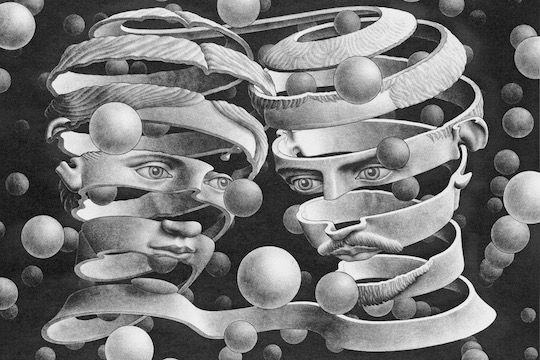
© M.C. Escher | Bond of Union
En aquesta entrada, l'equip de Ciència Social Computacional d'Eurecat presenta un model per predir la popularitat dels continguts a les comunitats de fanfiction, desenvolupat en el marc del treball realitzat al projecte Möbius.
A més, aquests dies Möbius ha celebrat la seva Cerimònia de Premis en línia i ha anunciat els guanyadors de la seva convocatòria oberta de manuscrits. El manuscrit guanyador es convertirà en una experiència transmèdia amb una producció d'àudio 3D i realitat virtual, així com una instal·lació artística. El llibre de Möbius es mostrarà en diverses seus arreu d'Europa durant el 2023 i el 2024.
Febrer 2022 - gener 2024
Projecte
AI4Drought
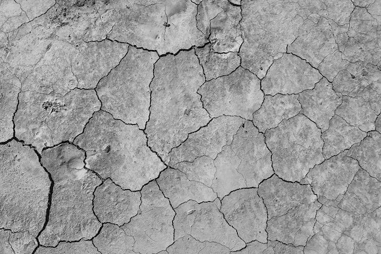
AI4Drought és un projecte que es basa en un enfocament integral que combina Intel·ligència Artificial,
sistemes de predicció climàtica estacional dinàmica i múltiples productes d'observació de la Terra. Aquest projecte té com a objectiu
millorar les capacitats de predicció de sequeres i enriquir la nostra comprensió de les causes, l'evolució i les conseqüències de les
sequeres a escales temporals estacionals. AI4Drought aspira a esdevenir una fita en la generació de coneixement accionable sobre la
relació entre els registres de dades d'observació de la Terra a llarg termini i les variables climàtiques modelades mitjançant
enfocaments d'IA multiescala innovadors.
La nostra principal contribució a AI4Drought és analitzar totes dues línies de treball (models d'IA i models basats en observació de la Terra) amb
tècniques d'IA explicable (XAI) per tal de proporcionar interpretabilitat als models basats en dades i generar confiança en els resultats
corresponents, fent possible confirmar coneixements existents, qüestionar-los i generar noves hipòtesis en l'àmbit de les ciències del clima.
Aquest projecte ha rebut finançament de l'ESA (Agència Espacial Europea).
1 de juny de 2021
Article de recerca

© Julián Vicens | Gas Works Park, Seattle, USA
Recerca col·lectiva i participativa centrada en la mesura dels nivells de NO2
a Barcelona durant quatre setmanes de 2018, en el marc del projecte xAire i l'exposició «After the end of the world».
L'article de recerca titulat «Large-scale citizen science provides high-resolution nitrogen
dioxide values and health impact while enhancing community knowledge and
collective action» està disponible en obert
a la revista The Science of Total Environment.
Demostrem que la ciència ciutadana contribueix a l'esforç
per reduir la contaminació de l'aire a les àrees urbanes, aportant evidències
perquè la ciutadania pugui dur a terme accions comunitàries i polítiques per
abordar el problema. Alhora,
les mesures d'alta resolució
ajuden els científics a elaborar models de qualitat de l'aire i avaluacions de
l'impacte en la salut.
A més, les dades de qualitat de l'aire combinades amb dades socials permeten
fer anàlisis sobre les desigualtats ambientals a les àrees urbanes i, en
última instància, sobre l'impacte social de la contaminació. Podeu trobar el
codi i les dades de l'anàlisi social i ambiental en aquest repositori.
21 d'abril de 2021
Article de recerca

© Public Domain | Red Cross Library Service. Brisbane, 1944
Nou article de recerca centrat en la nostra feina sobre biblioteques públiques i
ciència ciutadana en dos projectes: «Citizen Science Laboratory» i «Citizen
Science in Action». L'article
titulat
«Public libraries embrace citizen science: strengths and challenges» està disponible en obert
a la revista "Library & Information Science Research".
Alguns dels resultats destacats són: les biblioteques públiques poden exercir lideratge en la
promoció i implementació d'iniciatives de ciència ciutadana; la ciència
ciutadana ajuda a atreure nous usuaris, augmentar la cohesió social i millorar
la percepció del valor social d'una biblioteca; i la ciència ciutadana anima
els usuaris a abordar problemàtiques comunitàries basades en la ciència
juntament amb els científics.
El projecte «Citizen Science Laboratory» va donar lloc a un kit d'eines cocreat
per i per a
bibliotecaris i ciutadans amb projectes de ciència ciutadana
multidisciplinaris per dur a terme a les biblioteques. A més,
podeu trobar una entrada publicada al blog CCCBLab sobre Citizen Science and Public Libraries en un context
global.
6 d'abril de 2021
Notícia
MediaFutures dona la benvinguda als projectes seleccionats
© Marjory Collins | New York Times newsroom (1942)
La primera convocatòria de MediaFutures es va tancar al gener
amb més de 100 sol·licituds centrades a combatre la desinformació en el
context de la pandèmia de coronavirus. Al voltant de vint propostes
seleccionades d'artistes i startups que utilitzen dades per afrontar els
reptes proposats estan a punt per iniciar (START) i desenvolupar
(BUILD) els seus projectes. Durant els propers sis mesos donarem suport al
programa d'acceleració (startups) i de residència (artistes) en què
participem, dissenyant experiments. Treballarem activament amb una llista
curta de
projectes per fer recerca en temes com l'engagement ciutadà,
la desinformació, l'anàlisi de controvèrsies, etc.
Podeu trobar més informació sobre la nostra contribució donant suport als
experiments dels participants en aquest article.
16 de març de 2021
Masterclass
Masterclass: "La mobilitat en temps de pandèmia"
© Tibidabo | Avió Tibidabo
Masterclass centrada en l'estudi de la mobilitat humana i el seu impacte en la
propagació de l'epidèmia. A més, vaig repassar les conseqüències de la mobilitat
humana més enllà
de l'epidèmia, com ara l'ús de diverses fonts de dades per estudiar la
mobilitat i els reptes en termes de sistemes de suport a la decisió basats en dades,
la governança de dades, les dades obertes i la privadesa per disseny en projectes amb implicacions socials
rellevants.
Aquesta masterclass es va impartir en el marc de la
Mobile Week en col·laboració amb Barcelona Activa.
1 de març de 2021
Projecte
Mobius
© M.C. Escher | Bond of Union
Möbius és un projecte H2020 l'objectiu principal del qual és renovar i revitalitzar el
sector editorial europeu, proporcionant-li mètodes i eines per aprofitar el
potencial dels prosumidors en els processos d'innovació, garantint així
perspectives centrades en l'usuari i impulsades per l'usuari en
el disseny i la implementació de noves experiències mediàtiques enriquides.
La nostra principal contribució a Möbius consisteix a dur a terme
anàlisis basades en dades de diferents comunitats d'usuaris, especialment centrades en comunitats de fans (AO3,
FanFiction o Fandom) i altres espais com Reddit, aplicant tècniques de
mineria de dades per extreure coneixement a partir de l'anàlisi dels comportaments col·lectius dels prosumidors.
Aquest projecte ha rebut finançament del programa d'innovació Horizon 2020
de la Unió Europea amb l'acord de subvenció núm. 957185.
1 de febrer de 2021
Projecte
MediaFutures
1a convocatòria oberta
© Marjory Collins | New York Times newsroom (1942)
La primera convocatòria oberta adreçada a startups i artistes que treballen en solucions creatives basades en dades sobre comunicació, ciència i democràcia entorn de la desinformació i el coronavirus s'ha tancat amb més de 100 sol·licitants en les tres línies: Artist for Media, Startups for Citizens, i Startup meets Artist.
El procés de revisió i avaluació de les sol·licituds en les tres línies es duu a terme durant el febrer. Participaré en la revisió dels projectes d'Artist for Media, seleccionant els millors projectes, entre més de 40, que utilitzen les dades com a material artístic per explorar noves idees i tecnologia amb l'objectiu de qüestionar-ne l'impacte en les persones i la societat.
8 de gener de 2021
Llibre

© Debaird | City Lights Bookstore, San Francisco
El llibre «The Science of Citizen Science» s'ha publicat finalment amb la contribució de més d'un centenar d'autors. Personalment, vaig contribuir al capítol «Machine Learning in Citizen Science: Promises and Implications», en què aprofundim en l'aplicació de l'aprenentatge automàtic a la ciència ciutadana i en la col·laboració entre persones i màquines per resoldre problemes complexos de manera justa. A més, vaig participar en altres projectes presentats als capítols «Citizen Social Science: New and Established Approaches to Participation in Social Research» i «Participation and Co-creation in Citizen Science».
Aquest llibre cobreix tots els aspectes, incloent-hi els punts forts i les barreres, rellevants per satisfer les moltes expectatives de la ciència ciutadana. És una conclusió meravellosa a quatre anys d'intercanvi i cooperació intensius dins d'una xarxa europea de recerca en ciència ciutadana en el marc de la COST Action 15212: Citizen Science to promote creativity, scientific literacy, and innovation throughout Europe.
1 de gener de 2021
Projecte
Patrons de mobilitat humana durant la pandèmia
© Tibidabo | Avió Tibidabo
La mobilitat humana és un dels principals indicadors per modelar la propagació d'epidèmies. Una de les intervencions no farmacèutiques més importants durant els brots epidèmics és la limitació de la mobilitat amb l'objectiu de reduir el nombre de contactes i frenar la transmissió del virus. Tanmateix, l'aplicació de mesures reals de mobilitat es veu afectada per un gran nombre de variables (socials, culturals, econòmiques, geogràfiques, etc.) i a diferents escales, des de la llar fins a la nació. Aquest projecte de recerca té com a objectiu comprendre els patrons de mobilitat que sorgeixen durant la pandèmia a escala urbana des d'una perspectiva social, amb especial èmfasi en les implicacions socials de les polítiques públiques.
Actualització
01/01/21
Anàlisi de la mobilitat a Mallorca
7 de setembre de 2020
Projecte
MediaFutures
© Marjory Collins | New York Times newsroom (1942)
MediaFutures és un projecte H2020 l'objectiu principal del qual és
construir un hub europeu d'innovació en dades, incloent-hi finançament, mentoria i suport a projectes emprenedors i creatius per repensar la cadena de valor dels mitjans de comunicació mitjançant usos responsables i innovadors de les dades. La nostra principal contribució des d'Eurecat és posar a disposició un ampli catàleg de recursos de dades obertes i tecnologies de codi obert gratuïtes per a l'explotació de dades. Això inclou conjunts de dades i eines per a la recollida, exploració i explotació de dades produïdes pels socis del projecte, així com recursos disponibles públicament. A més, oferim suport actiu en aspectes no tècnics, així com en el disseny d'experiments i la metodologia per garantir resultats vàlids i fiables a partir de la interacció amb dades de diverses fonts, incloent-hi plataformes de xarxes socials, projectes de ciència ciutadana, plataformes de govern obert i democràcia participativa, etc. Aquest projecte ha rebut finançament del programa d'innovació Horizon 2020 de la Unió Europea amb l'acord de subvenció núm. 951962.
6 de juliol de 2020
Docència
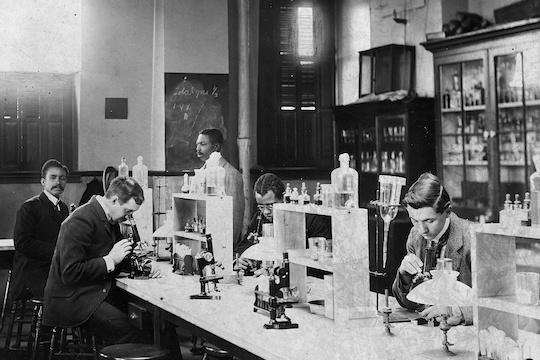
© William Edward Burghardt | Bacteriology Lab, Howard University. Washington, D.C. (1900)
Línies de recerca oferides a l'estudiantat del Màster en Data Science a la Universitat Oberta de Catalunya (UOC) per desenvolupar el seu treball final de màster durant el curs 2020/21. Les línies de recerca se centren en l'aplicació de tècniques de ciència de dades a l'estudi de sistemes socials complexos i diferents aspectes del comportament social, analitzant dades de sistemes urbans, xarxes socials, projectes de ciència ciutadana i experiments de teoria de jocs. Es donen la benvinguda a projectes que busquin desenvolupar sistemes que combinin intel·ligència artificial i art, especialment propostes d'art generatiu.
1 de gener de 2020
Article de recerca

© Martí E. Berenguer | FiraTàrrega
La cooperació en espais hipersocials està molt condicionada pel gènere de les persones que hi interactuen. Aquest experiment, dut a terme a la Fira de Tàrrega el 2017, mesura la disposició de les persones a cooperar, aparellant-les per participar en el joc del dilema del presoner, a l'aire lliure i en el context d'una performance artística. Aquest experiment, dut a terme seguint els principis de la recerca participativa i la ciència ciutadana, posa de manifest com la identitat de gènere de l'altra persona és un factor rellevant en termes de cooperació i confiança. En escenaris hipersocials, les persones mostren un comportament prosocial, especialment les dones, que exhibeixen alts nivells de cooperació, confiança i capacitat per endevinar el comportament dels altres. L'article de recerca complet «Gender-based pairings influence cooperative expectations and behaviours» està disponible públicament a Scientific Reports i coescrit amb Anna Cigarini i Josep Perelló.
28 de novembre de 2019
Projecte
© Public Domain | Red Cross Library Service. Brisbane, 1944
Publicació de «Citizen Science in Libraries», un kit d'eines cocreat per i per a bibliotecaris i ciutadans. Els bibliotecaris van proposar deu projectes de ciència ciutadana multidisciplinaris per dur a terme a les biblioteques amb els usuaris, dins del context específic de cada biblioteca. Aquest kit d'eines es va elaborar en sessions de cocreació al «Citizen Science Laboratory» mitjançant tallers facilitats pels membres d'OpenSystems, amb l'objectiu de construir una comunitat de ciència ciutadana al voltant de les biblioteques de Barcelona. Aquest projecte va ser finançat per la Diputació de Barcelona en el marc de BiblioLab.
15 de novembre de 2019
Tesi

© Julián Vicens | Thesis report
«Premi extraordinari de doctorat» atorgat a la meva tesi doctoral «Human Behaviour Experimentation and Participation in Scientific Activities in the Wild» per la Universitat Rovira i Virgili. Vull agrair a Jordi Duch i Mercè Gisbert la seva supervisió, als coautors de les publicacions incloses a la tesi i al tribunal format per Marisa Ponti, Frederic Guerrero i Sergio Gómez, que la van qualificar amb la menció "Cum Laude". El treball aprofundeix en la comprensió dels sistemes socials complexos i estudia la cooperació en diferents contextos mitjançant l'experimentació col·lectiva basada en la teoria de jocs i els dilemes socials. La tesi també explora el desenvolupament de plataformes per dur a terme ciència participativa i ciutadana, i l'aplicació d'algorismes d'aprenentatge automàtic per revelar patrons de comportament.
26 d'octubre de 2019
Taller
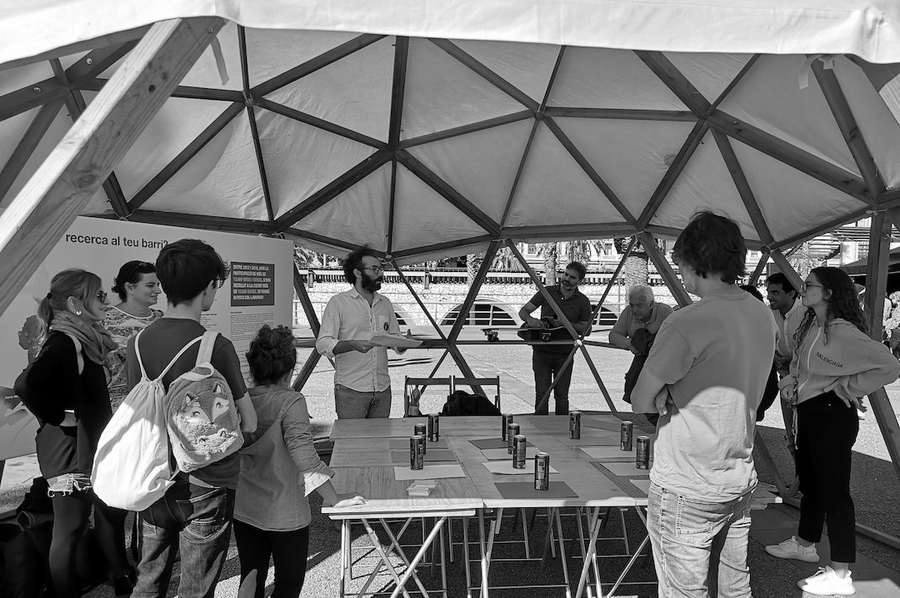
© Barcelona Ciència | Festa de la Ciència
Presentació dels resultats de «The Housing Game» a la Festa de la Ciència de Barcelona per part de membres d'OpenSystems. «The Housing Game» és un projecte de ciència ciutadana que té com a objectiu comprendre els dilemes que sorgeixen en el procés de presa de decisions de la ciutadania en el context del mercat de l'habitatge. Aquest projecte s'ha cocreat amb bibliotecaris, usuaris i la comunitat local dins del programa BiblioLab de les Biblioteques Municipals del districte de Fort Pienc.
1 d'octubre de 2019
Projecte
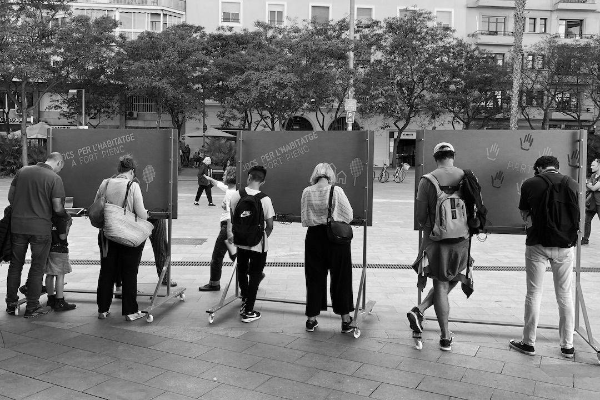
© OpenSystems | Games for Housing. Fort Pienc
«Citizen Science in Action» tenia com a objectiu cocrear un experiment de ciència ciutadana centrat en una preocupació social compartida per la comunitat al voltant de les biblioteques, per i per als usuaris, en tres municipis (Granollers, Olesa de Montserrat i Fort Pienc). D'aquest procés col·laboratiu va sorgir la preocupació compartida per l'accés a l'habitatge. Totes les persones participants van formular i conceptualitzar una intervenció a l'espai públic per recollir evidències que responguessin diferents preguntes de recerca. El resultat va ser «Jocs per l'Habitatge», una intervenció als espais públics consistent en quatre dies de recollida de dades sobre els diferents dilemes als quals s'enfronten la ciutadania i els responsables polítics en el mercat de l'habitatge.
30 de juliol de 2019
Articles
© Library of Congress | New York Public Library, 1918
Sèrie d'articles que tenen com a objectiu compartir experiències i reflexions de ciència ciutadana per part del grup OpenSystems, que comparteix les seves experiències d'arreu del món, moltes d'elles desconegudes a Barcelona. La ciència ciutadana implica la participació ciutadana en la ciència, però també impulsa la col·laboració i l'impacte en altres disciplines. Aquests articles, escrits de manera col·laborativa pels membres d'OpenSystems, aborden la relació entre Citizen Science with Arts, Public Libraries i Community Actions.
30 de març de 2019
Projecte
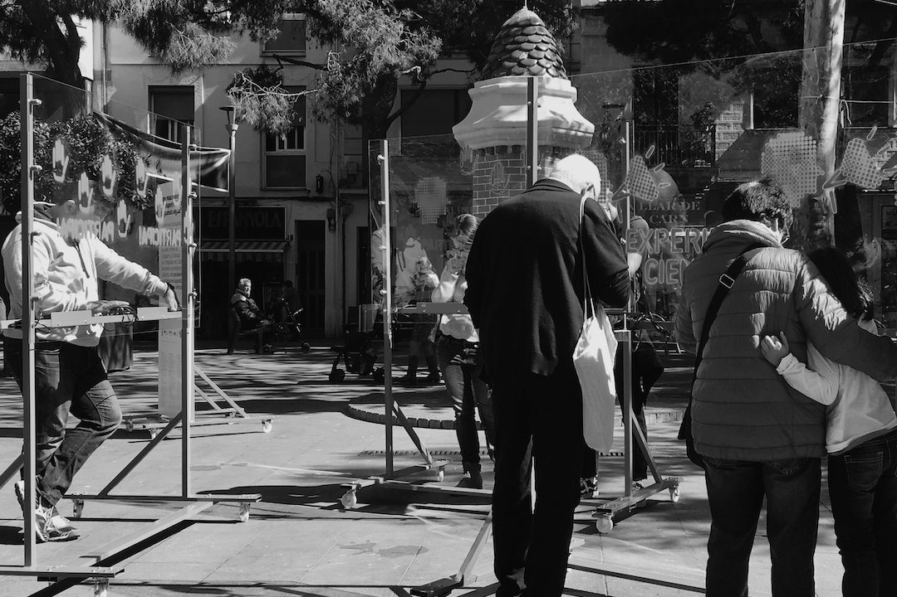
© OpenSystems | La Torrassa, L'Hospitalet de Llobregat
«Aigua de Barri» va ser un projecte consistent en una sèrie de tallers facilitats per membres d'OpenSystems en cooperació amb Ítaca, una entitat de l'Hospitalet de Llobregat dedicada a l'educació en el lleure d'infants i joves. L'objectiu principal del projecte era dur a terme activitats de ciència ciutadana, així com organitzar una performance final a l'espai públic utilitzant dilemes socials i teoria de jocs per reflexionar sobre l'ús de recursos bàsics com l'aigua. El projecte va ser finançat per la Fundació Agbar.
16 de maig de 2019
Projecte
© Thomas Vilhelm | Biennal Ciutat i Ciencia
Acció de recerca col·lectiva efímera que té com a objectiu comprendre les interaccions que es produeixen als espais públics des d'una perspectiva de gènere. Citizen Social Lab recull dades per entendre millor les diverses interaccions humanes en contextos urbans en què un determinat conflicte ens fa afrontar un dilema social. Aquest projecte ens permet investigar conflictes individuals en situacions de violència pública. «Consciències» es va dissenyar en el marc de la Biennal Ciutat i Ciència, un festival organitzat per l'Ajuntament de Barcelona, i es va tornar a dur a terme al festival de ciència ciutadana Calidoscopi per part d'OpenSystems, Nus i el col·lectiu d'estudiants feministes d'Elisava.
13 de febrer de 2019
Taller
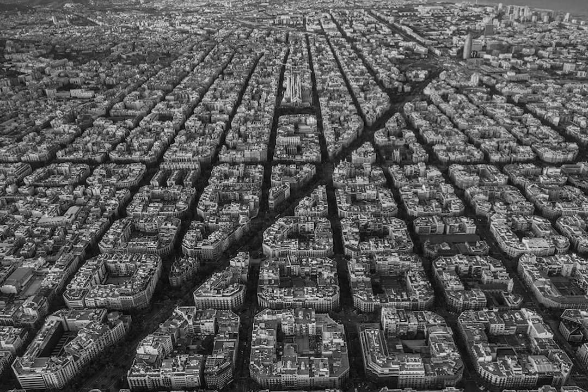
© Sebastien Nagy | Barcelona
Les pràctiques de ciència ciutadana s'han impulsat en contextos urbans arreu del món. Els esforços participatius inclouen la identificació de preocupacions, la definició i el disseny de la recerca, la recollida de dades i la proposta d'accions que responguin a preocupacions específiques amb evidència científica. Aquest esdeveniment va comptar amb les aportacions, entre d'altres, de Louis Francis (Mapping for change), que va parlar sobre accions ambientals i qualitat de l'aire, Shannon Dosemagen (Public Lab), que va posar de manifest la ciència comunitària i l'acció col·lectiva, i LeeAnne Walters, que va explicar l'experiència de la crisi de subministrament d'aigua a Flint. Aquestes van ser només algunes de les xerrades interessants sobre ciència ciutadana i accions dutes a terme en aquest esdeveniment, organitzat per membres d'OpenSystems en el marc de la Biennal Ciutat i Ciència i l'acció COST 15212 de ciència ciutadana.
13 de febrer de 2019
Taller
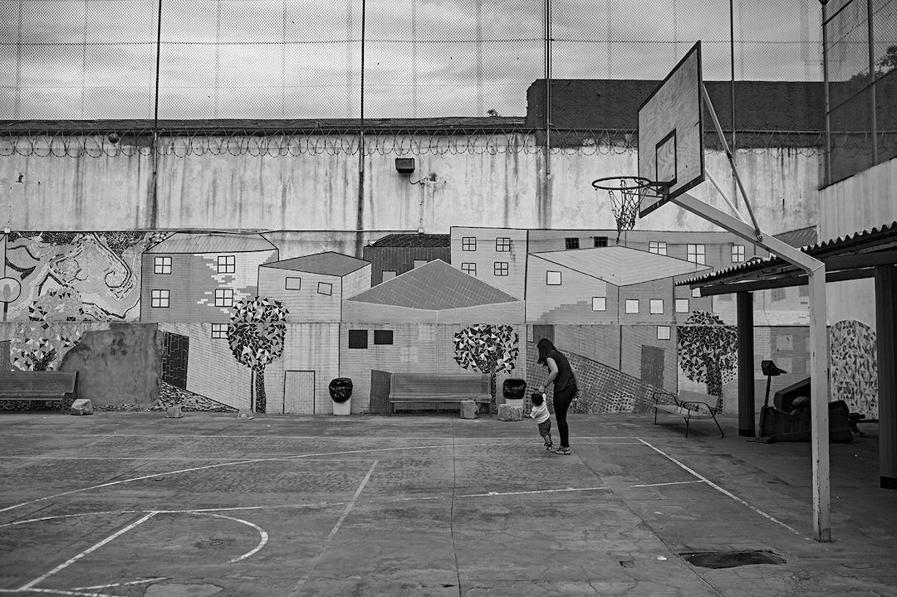
© Francesc Melcion | Wad-Ras Prison
Taller dut a terme al Centre Penitenciari de Dones de Barcelona, conegut popularment com a presó de Wad-Ras. L'objectiu era que les internes descobrissin una sèrie de projectes de ciència ciutadana que es poden dur a terme en línia des de qualsevol lloc amb connexió a internet. Alguns exemples són projectes per classificar galàxies o identificar animals a la sabana africana amb ZooUniverse, resoldre l'estructura d'una proteïna amb Foldit o mapar un cervell en 3D. Aquest taller també se centra a discutir sobre l'expertesa i la no-expertesa, l'interès i la passió, i, sobretot, en com podem construir coneixement i transformar aquest procés d'aprenentatge en una activitat valuosa. Aquest taller va formar part de la Biennal Ciutat i Ciència de Barcelona.
1 de desembre de 2018
Article de recerca

© Julian Vicens | Climate Change Game
Citizen Social Lab és una plataforma digital utilitzada per dur a terme experiments de comportament humà al carrer seguint els principis de la ciència ciutadana. Aquesta plataforma recull dades de la interacció entre persones que s'enfronten a un conjunt variat de dilemes socials (jocs de béns públics, dilema del presoner, joc de confiança...). La plataforma s'analitza amb detall a l'article «Citizen Social Lab: A Digital Platform for Human Behaviour Experimentation Within a Citizen Science Framework» publicat a PlosOne, amb dades de més de dos mil persones que han participat en experiments a l'espai públic. Aquest article està coescrit amb Jordi Duch i Josep Perelló.
1 de novembre de 2018
Article de recerca
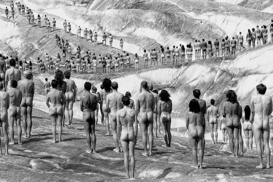
© Spencer Tunick | Aletsch, Alps
Experiment social que estudia la cooperació al voltant de les negociacions contra el canvi climàtic. Es va dur a terme a Barcelona utilitzant metodologies de ciència ciutadana amb la participació de 324 persones. Els resultats de l'experiment, publicats a PlosOne, van revelar que les desigualtats al voltant de les negociacions sobre el canvi climàtic afecten més durament les persones, societats i organitzacions amb pocs recursos, que són, alhora, les que mostren nivells de cooperació més alts en termes relatius.
27 de setembre de 2018
Congrés

© Jan Collsiö | Dagen H
Xerrada al Conference of Complex Systems (Tessalònica, 2018) dins del taller «Complex systems for the most vulnerable». La xerrada,
«Addressing social justice and unveiling vulnerabilities through game theory and collective experiments», es va centrar a presentar l'emergència de comportaments al voltant de reptes socials importants, com el canvi climàtic i les seves accions de mitigació, la salut pública i la tendència actual a reforçar els serveis d'atenció a domicili, i l'impacte en la salut de la ciutadania a causa de fortes desigualtats en la qualitat de l'aire de les ciutats. Tots aquests fenòmens es van estudiar mitjançant un conjunt d'experiments de comportament al carrer combinats amb pràctiques de ciència ciutadana.
1 de juliol de 2018
Projecte
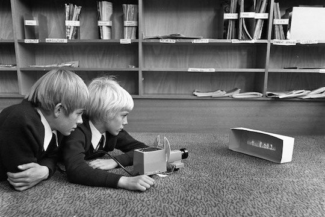
© Tasmanian Archive | Teaching Aids Centre, 1951 - 1973
Participació a «STEM4Youth», un projecte H2020 que té com a objectiu promoure l'educació STEM a través de reptes científics clau i potenciar-ne l'impacte en la nostra vida i perspectives professionals. El projecte va introduir la ciència ciutadana a les escoles d'una manera radical, duent a terme experiments col·lectius i participatius a Barcelona, Polònia i Grècia. Aquests experiments van estudiar preocupacions públiques com les desigualtats de gènere, la qualitat de l'aire o la contaminació de l'aigua, sorgides de sessions de codisseny amb l'estudiantat [informe final]. Aquesta recerca es duu a terme mitjançant experiments de comportament, teoria de jocs i utilitzant Citizen Social Lab, una plataforma participativa per dur a terme experiments col·lectius al carrer. Aquest projecte ha rebut finançament del programa de recerca i innovació Horizon 2020 de la Unió Europea amb l'acord de subvenció núm. 710577.
9-10 de juny de 2018
Taller
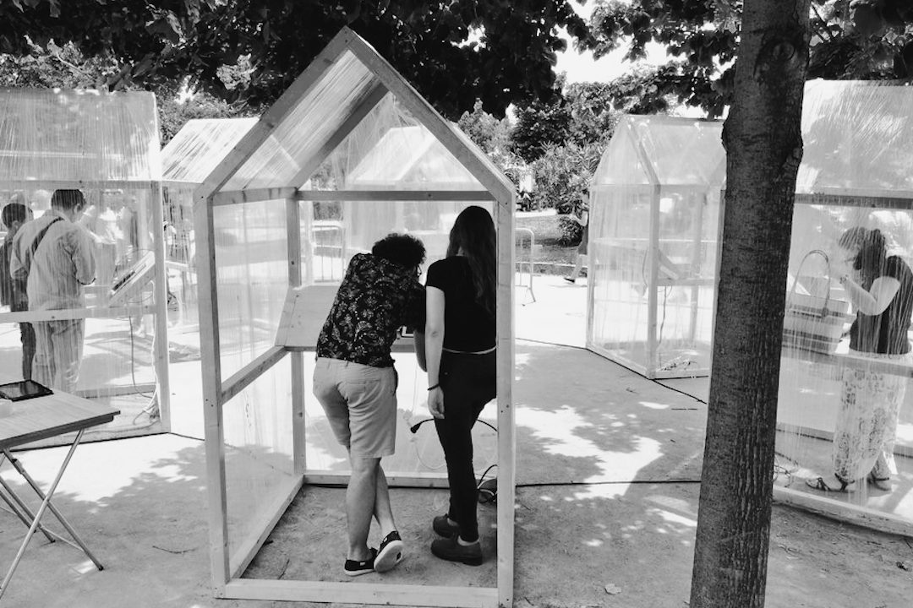
© OpenSystems | Festa de la ciència
Experiment de comportament centrat en l'estudi del comportament humà en relació amb la qualitat de l'aire d'una ciutat. En aquest experiment, dut a terme a la Festa de la Ciència de Barcelona, ciutadans i ciutadanes de Barcelona van participar en una investigació de ciència ciutadana per estudiar la concentració de diòxid de nitrogen (NO2) en més de 800 punts de Barcelona. A partir d'aquests resultats, els participants havien de contribuir a un dilema social per llançar una acció col·lectiva relacionada amb la qualitat de l'aire.
29 de maig de 2018
Xerrada

© Unknow author | Starlings flow
Presentació de la nostra feina sobre les interaccions socials a la comunitat d'atenció a la salut mental a la VII Jornada Complexitat: complex systems for theory to data science. La xerrada «A game theory approach to the mental health community» aprofundeix en els trets de comportament dels grups de rol i el capital social a l'ecosistema de la salut mental.
© Julián Vicens | Thesis report
Defensa de la meva tesi doctoral «Human Behaviour Experimentation and Participation in Scientific Activities in the Wild» a la primavera de 2018. La tesi va ser dirigida per Jordi Duch i Mercè Gisbert. Aquest treball, desenvolupat al llarg de quatre anys, aprofundeix en la comprensió dels sistemes socials complexos i estudia la cooperació en diferents contextos (canvi climàtic, comunitat d'atenció a la salut mental, etc.) mitjançant l'experimentació col·lectiva basada en la teoria de jocs i els dilemes socials. La tesi també explora el desenvolupament de plataformes per dur a terme ciència participativa i ciutadana, i l'aplicació d'algorismes d'aprenentatge automàtic per revelar patrons de comportament. Es va defensar amb èxit i va rebre la menció "Cum Laude" per part del tribunal format per Marisa Ponti, Frederic Guerrero i Sergio Gómez.
28 de febrer de 2018
Article de recerca

© OpenSystems | Mental Health Day, Lleida
Els trastorns mentals tenen un impacte enorme a la nostra societat. A «Quantitative account of social interactions in a mental health care ecosystem: cooperation, trust and collective action» presentem els resultats d'una sèrie de jocs que ens permeten sondejar diferents trets de comportament dels grups de rol de la comunitat d'atenció a la salut mental mitjançant pràctiques de ciència ciutadana. L'evidència reforça la idea del capital social comunitari, en què cuidadors i professionals exerceixen un paper protagonista. Tanmateix, el cost de l'acció col·lectiva recau principalment en les persones amb una condició de salut mental, la qual cosa posa de manifest la seva vulnerabilitat. Finalment, assenyalem les condicions en què la cooperació entre els membres de l'ecosistema es manté millor, suggerint com es poden promoure cercles virtuosos d'inclusió i participació en un marc d'"atenció en la comunitat". Aquest article de recerca està coescrit amb Anna Cigarini, Josep Perelló i Anxo Sánchez.
15 de febrer de 2018
Projecte
© Julián Vicens | Gas Works Park, Seattle, USA
«xAire» és un projecte que proposa una mesura col·lectiva de la qualitat de l'aire a Barcelona, centrat especialment en la contaminació per diòxid de nitrogen (NO2), un dels contaminants més importants de la ciutat. Aquest projecte reuneix vint escoles de la ciutat de Barcelona de deu districtes diferents per instal·lar més de 800 sensors que ajudaran a proporcionar una cartografia més precisa de la qualitat de l'aire a la ciutat. Aquest projecte es duu a terme a The City Station, una clínica emergent de salut ambiental construïda a l'espai públic que posa l'accent en la recerca col·lectiva i la participació ciutadana en la ciència. Aquest projecte és possible gràcies al patrocini de DKV i 4sfera i a la col·laboració de Mobile Week Barcelona, ISGlobal, Mapping for Change, OpenSystems, i la participació de 20 escoles de Barcelona. The City Station forma part de l'exposició del CCCB «After the end of the world».
1 de desembre de 2017
Projecte
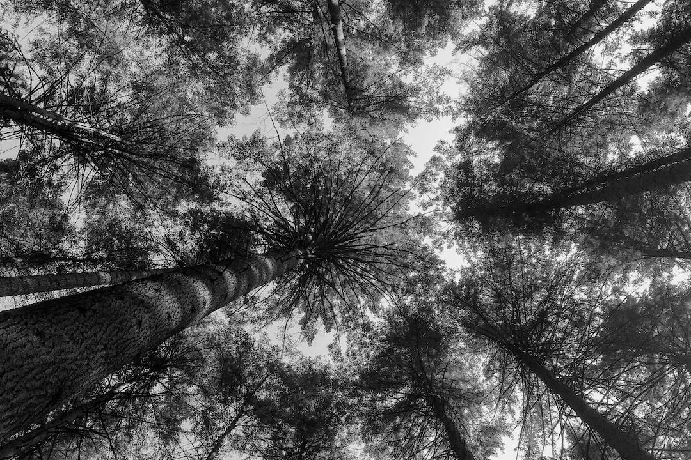
© Julián Vicens | Pacific Spirit Reginal Park, Vancouver. Canada
«Patrons Naturals» és un projecte que aprofundeix en la relació entre Ciència i Natura. Mitjançant un sistema que promou l'observació de la natura com un llenç per presentar el procés de recerca, som capaços de revelar les implicacions de la ciència en la formació de patrons i el seu impacte, més enllà de les ciències naturals, en l'art, el disseny, l'arquitectura o la música.
1 de setembre de 2016
Article de recerca

© OpenSystems | DAU Festival, Barcelona
Experiment de camp en què 541 persones s'enfronten a quatre jocs diàdics diferents amb l'objectiu d'establir regles generals de comportament que dictin les accions de les persones. En analitzar les observacions d'aquestes situacions socials senzilles mitjançant algorismes d'aprenentatge automàtic, trobem que la majoria dels subjectes s'ajusten, amb un alt grau de consistència, a un nombre limitat de fenotips de comportament: envejós, optimista, pessimista i confiat. Els resultats complets es publiquen a Science Advances.
12 de desembre de 2015
Projecte
The Climate Game
© Spencer Tunick | Aletsch, Alps
«The Climate Game» és un experiment emergent que ens permet estudiar com les persones cooperen per fer front a un risc col·lectiu com el canvi climàtic. Proposem un dilema social clàssic basat en la teoria de jocs cooperativa centrat en les negociacions per fer front al canvi climàtic. En aquest projecte, utilitzem la plataforma Citizen Social Lab per recollir les interaccions de la ciutadania i principis de ciència participativa per fomentar-ne la implicació. L'experiment principal es va dur a terme al festival DAU, on 324 persones van contribuir amb les seves accions. Els resultats de l'experiment, publicats a PlosOne, van revelar que les desigualtats al voltant de les negociacions sobre el canvi climàtic afecten més durament les persones, societats i organitzacions amb pocs recursos, que són, alhora, les que mostren nivells de cooperació més alts en termes relatius. La plataforma, els resultats científics, les dades i el codi estan disponibles públicament seguint els principis de la ciència oberta.
16 de maig de 2015
Projecte
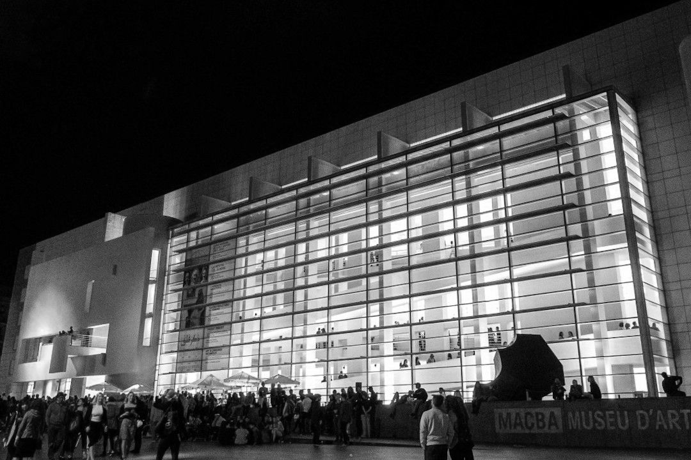
© Rae Bathgame | MACBA, Barcelona
«Museum Night Experiment» és un experiment de ciència ciutadana creat per observar, capturar i analitzar el "comportament cultural" de les persones assistents a «La Nit dels Museus» a Barcelona. L'objectiu principal és analitzar els patrons que genera la ciutadania quan visita massivament museus i centres culturals per tal de comprendre els perfils de participació i establir una relació més eficient entre la ciutadania, els equipaments culturals i la ciutat.
1 de setembre de 2011
Projecte
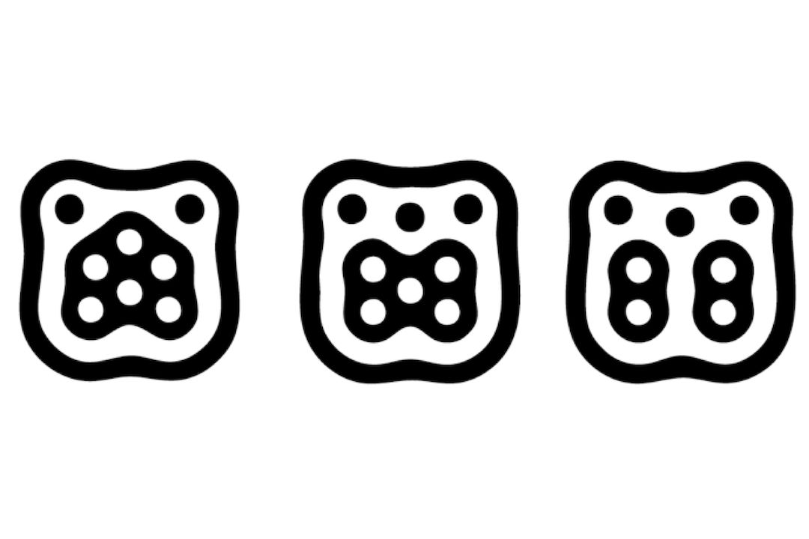
© Julián Vicens | TUIO Fiducials
Aquest projecte va formar part del meu Treball Final de Grau d'Enginyeria, centrat en el disseny i desenvolupament d'una interfície natural d'usuari i un sistema d'àudio tridimensional. La tesina es basava en treballs previs sobre interacció persona-ordinador i processament d'àudio. L'artefacte final crea una experiència sonora mitjançant un sistema que reacciona en temps real als fiducials situats sobre una interfície d'usuari de sobretaula. Cada fiducial correspon a un so concret representat en un entorn tridimensional creat sobre una interfície natural d'usuari que funciona amb protocols TUIO.